Teaching a
ragdoll to walk
Sixteen active-ragdoll boxers, 127 numbers in and 30 out, scored fifty times a second. Twenty generations of reward design — and the thing that finally worked wasn't the reward at all.
results/ and the live EditorWhere it stands
Gens 9–11 eliminated the reward's shape, gradient and metric by direct measurement, and the fighter still would not step. The blocker was economics: a fall forfeited ~72% of episode return while perfect gait bought ~26%, so a first attempt at a step could never pay for itself. Gen 12 stopped falls ending the episode — single support went from a seven-generation ceiling of 0.031 to 0.951.
Two brains, two jobs
The project ships different policies to different mini-games, because the two skills are in tension. A brain that stands superbly cannot walk; a brain that walks cannot stand still.
| Mini-game | Brain | Key metric | Status |
|---|---|---|---|
| SCN_TEST_BALANCE_CONTEST | Locomotion_gen20 | 113 steps between falls | Production |
| SCN_TEST_WALK_CONTEST | Locomotion_gen18_34M | Alternation 0.766 | Production |
| Heuristic fallback (all scenes) | — code-driven PD bot | SingleSupport 0.000 | Mandated |
Twenty generations
Each generation moved exactly one mechanism, so the result would be readable. Three of them were exploits that looked like success on the curves.
Gait quality by generation
Single support is how often exactly one foot bears load. Alternation is how often the bearing foot changes — the metric that separates walking from hopping.
Reward against its gate
Each curriculum rung unlocks only when smoothed reward clears a gate. The gates fall as commanded speed rises — deliberately, because a non-stepping fighter scores 1.000 at StandStill but only 0.345 at Shuffle.
Black tick marks the gate. Bars show the final mean reward of the generation that last occupied each rung.
| Run | Steps | Reward | Lesson | 1st fall | Support | Altern. | Speed | Outcome |
|---|
Execution loop
One fixed tick at 50 Hz: sense, think, actuate, simulate, score, decide whether the round continues.

OnActionReceived only stores them; FixedUpdate applies them. That separation is a project rule and keeps physics deterministic.
Tensor blueprint & actuator map


ComputeObservationCount and never hand-typed — three serialized bool flags change it, and each change invalidates every previously trained ONNX.Observation vector — 127 floats
Composition
Where the width comes from, and which flags add which block.
| Block | Width | Index | Condition | Contents |
|---|---|---|---|---|
| Root | 13 | 0–12 | always | pelvis height above GroundY, up & forward vectors, linear + angular velocity ÷20 |
| Per joint × 14 | 98 | 13–110 | always | 7 per joint: target vs actual per axis, angular velocity, drive load |
| Foot | 8 | 111–118 | always | grounded flags, contact normals, downward ray ≤ 1 m |
| Foot height | 2 | 119–120 | _observeFootHeight | collider AABB min above ground |
| Locomotion command | 6 | 121–126 | _observeLocomotionCommand | commanded speed, goal direction (3), gait clock sin/cos @ 1.4 Hz |
| Opponent | 19 | — | _observeOpponent | boxing phase only — false in balance and walk |
13 + 98 + 8 = 119 (balance brains) · +2 = 121 (heuristic bots) · +6 = 127 (locomotion brains). Those three widths are exactly what the ONNX inventory reports.
Actuator map — 14 joints, 30 DOF, 75.0 kg
| Joint | Mass kg | Pitch° | Roll° | Yaw° | DOF | Kp | Kd | F max |
|---|
Drive authority is not the constraint: hip 7,000 N·m and knee 6,000 N·m against a 75 kg / 736 N body is roughly two orders of magnitude of headroom. That was measured and ruled out at gen 11.
What the fighter wants


| Term | Weight | Form | Why it exists |
|---|---|---|---|
| Upright | 0.15 | max(0, up·Y)² | posture floor |
| Speed match | 0.50 | exp(−err²/0.3²) | signed along goal — travelling backwards scores worse than standing |
| Single support | 0.30 | min(1, max(single, clr) + (1−b)·dbl·(1−clr)) | gen 10 made it a ramp; a binary flag gave no gradient |
| Clearance | 0.35 | swingLift / 0.05 m | gen 11 switched to collider AABB min — the transform is the foot centre |
| Height | 0.00 | disabled | it paid the agent for not moving |
| Smoothness | −0.05 | LastActionDelta01 | subtracted, not exponent — penalises twitch |
| Alternation gate | × | clamp01(switchRate / (1/35)) | gen 15 — multiplies support; standing = 0, hopping = 0 |
Gen 4 read a stale reset snapshot, so clearance was blind and read 0.000 for five million steps. Gen 10 rotated the foot instead of lifting it — a 65° ankle raises the foot centre 15 cm while the toe stays down, scoring full clearance with both feet planted. Gen 13 held one leg in the air permanently, scoring 0.951 single support because the XOR never cared which foot. Every one had curves that looked like success.
Trainer specification


| Parameter | Value |
|---|---|
| trainer_type | ppo |
| batch_size | 2048 |
| buffer_size | 20480 |
| learning_rate | 3.0e-4 |
| lr schedule | linear |
| beta (entropy) | 0.01 |
| epsilon (clip) | 0.2 |
| lambd (GAE) | 0.95 |
| num_epoch | 3 |
| time_horizon | 256 |
| gamma | 0.99 |
| extrinsic strength | 1.0 |
| hidden_units × layers | 512 × 3 |
| normalize | true |
| checkpoint_interval | 500,000 |
| Lesson | m/s | Gate | Statue score |
|---|---|---|---|
| StandStill | 0.0 | 0.55 | 1.000 |
| Sway | 0.2 | 0.60 | 0.840 |
| Shuffle | 0.4 | 0.45 | 0.345 |
| Step | 0.6 | 0.40 | 0.098 |
| Stride | 0.8 | 0.38 | 0.005 |
| Walk | 1.0 | — | 0.001 |
"Statue score" is what a fighter that never steps can earn at that rung. From Shuffle on, the gate sits above it — standing still cannot pass.
Throughput
| Configuration | Steps/s | 18M steps | Note |
|---|---|---|---|
| Editor, 16 fighters | 1,430 | 3.5 h | occupies the Editor |
| Headless, 2 envs | 1,810 | 2.8 h | chosen |
| Headless, 3 envs | 1,930 | 2.6 h | +6.6% for ~700 MB RAM |
Python/torch sits at ~390% CPU while the env processes idle at 16–27%. Adding envs adds agents, which adds trainer load — so this scales far worse than linearly.
Shipped models
Seventeen ONNX policies on disk. Width is the contract: a brain assigned from code mismatches in total silence, so the spawner refuses any brain whose obs_0 disagrees with what the fighter emits.
| Folder | KB | obs_0 | actions | Params | Status |
|---|